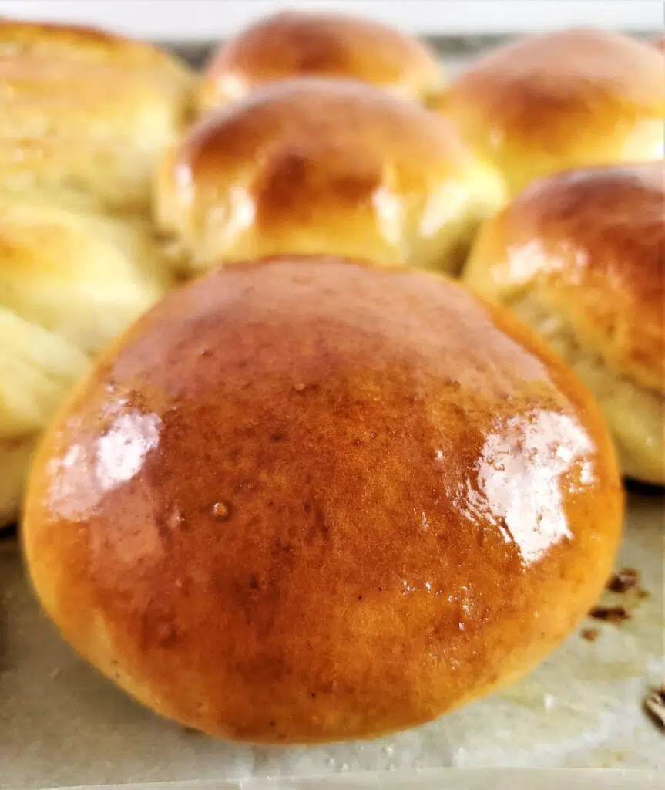

Gluten Free Hamburger Buns

Grill up those hamburgers this weekend because these gluten free hamburger
buns are the best you'll ever have!!
Ingredients
-
3½ cups (495g)
Kim's gluten free bread flour blend
-
2 tbsp (10g) whole psyllium husks or 1 tablespoon plus 1 teaspoon
psyllium husk powder
- 1 cup (200g) granulated sugar*** (see notes)
- 1¾ teaspoon baking powder
- 2 tbsp plus 1½ teaspoon (24g) instant yeast
- 1 teaspoon kosher salt
- 1¼ cups (300 ml) whole milk (non-dairy milk can be substituted)
- 2 large eggs, at room temperature
- ¾ cup (1½ sticks or 169 g) butter, melted or very soft
- 1 large egg for egg wash
- 2-3 tablespoon melted butter for brushing onto baked rolls
Instructions
-
Blend the dry ingredients in the bowl of a stand mixer using a whisk or
the paddle attachment. With the mixer running on low, slowly add the
milk, followed by the eggs and the butter.
-
Turn the mixer up to medium and beat for about 5 minutes. The dough
should be smooth and somewhat stretchy, but still pretty fluid and not
at all like bread dough should be. More like a slightly thinned out
cookie batter.
-
Remove the paddle attachment and scrape the dough together into a rough
ball or mound using a bowl scraper or spatula. Cover the bowl with
plastic wrap and place it in a warm, draft-free area for about 2 hours,
or until at least doubled or even tripled in volume. It should be fluffy
and almost look like frosting.
- Refrigerate for at least 6 hours, but preferably overnight.
Shaping Hamburger Buns
-
Divide the dough into approximately 3-ounce sized portions and roll each
portion into a tight ball (see my video for shaping Hawaiian rolls
here).
-
Place on parchment paper-lined baking sheet, spaced about 2 inches
apart. Flatten each to about ½-inch thick so they'll rise up and not
out. Cover loosely.
Shaping Hot Dog Buns
-
Roll dough out to a rectangle that's about ½-inch thick. Cut into strips
with a bench scraper or sharp knife. Place each strip on its side (cut
side up) on the baking sheet and press down lightly until they are about
one-inch thick.
Proofing and baking the buns
-
Cover the buns with plastic wrap loosely and allow to rise until about
doubled in size, which can take anywhere from a half an hour to an hour
and a half, depending on the temperature of your proofing area. When
buns are just about finished rising, preheat oven to 375° F.
-
Make an egg wash by whisking one egg with a splash of water. Brush this
onto each roll. Sprinkle with sesame seeds, if desired.
-
Bake rolls for about 15-20 minutes, or until golden brown and they
spring back when lightly touched.
-
Remove from the oven and brush with melted butter. Allow to cool before
slicing and toasting or grilling for your hamburgers and/or hot dogs.
Notes
Buns can be kept in a ziptop bag at room temperature for 2-3 days. Or they
can be frozen, individually wrapped and then placed in a larger ziptop
bag, for up to 3 months.
To refresh rolls and soften (if not eating fresh), cut in half (or down
the middle for split top hot dog buns) and place in a skillet with a
little melted butter. Cover the skillet and place over low heat and
lightly toast. Or steam wrapped in a damp paper towel in the microwave for
15-20 seconds. Or wrap several buns in aluminum foil and place in a 350
degree F oven and bake for about 10-15 minutes.